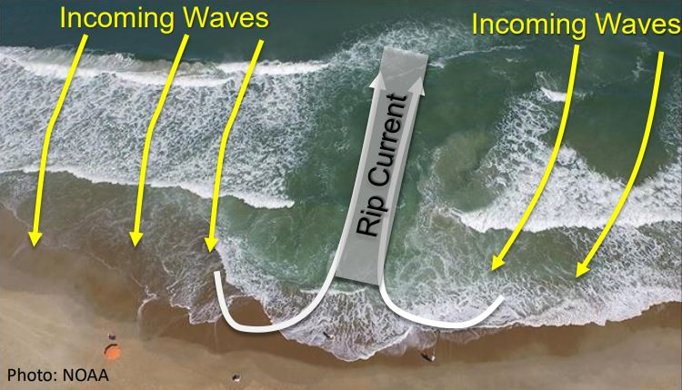

Rip Currents
Seaward channels of fast-moving waterRip currents are the single most dangerous hazard on KZN's beaches, responsible for the majority of lifeguard rescues and surf drownings in the region. These powerful, narrow channels of water rush seaward through gaps in sandbars, pulling swimmers away from shore faster than most people can swim. Rips are often invisible to the untrained eye and are most dangerous for swimmers who panic and exhaust themselves fighting the current directly.
Full Information & Dangerous Beaches